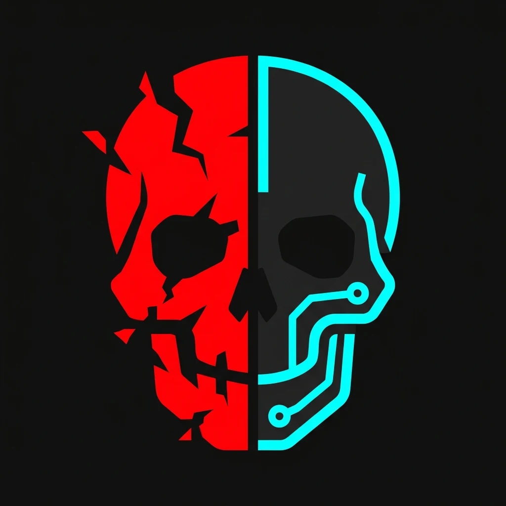

Registros de quem foi consumido pelo cromo. Explore o mapa ou use os filtros para ler cada arquivo.
Clique em um arquivo para abri-lo na mesa.
Resumos feitos por fã, simplificados. As frases são inspiradas nos personagens, não citações literais.